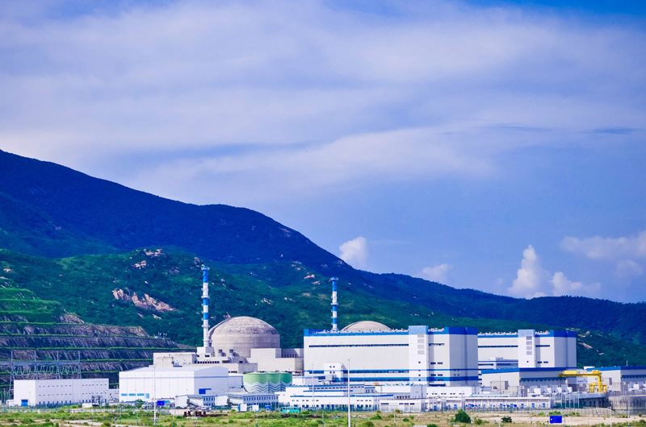

地理位置
台山核电站位于中国广东省台山市，是中国首座引进的欧洲压水堆（EPR）核电站。
堆形与数量
2台单机容量为1,750MW的欧洲压水反应堆（EPR）核电机组
发电基本原理
台山核电站采用欧洲压水堆（EPR）技术，这种技术使核电站更加安全、稳定，并具有更高的发电效率。其工作原理包括：
- 一回路： 核反应堆内的核燃料发生裂变，释放热能，这些热量传递给一回路的高温高压水。
- 二回路： 一回路的热水加热二回路水，将其转化为蒸汽，推动汽轮机发电。
- 三回路： 二回路的蒸汽冷却后变为水，通过冷凝器使用海水或淡水进行冷却。
功用与贡献
台山核电站为广东省提供了稳定且清洁的电力,对中国的节能减排目标做出了巨大的贡献。
